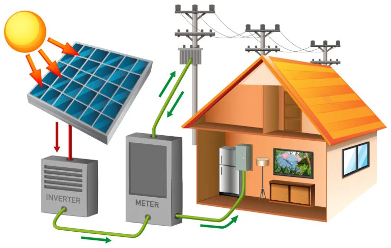
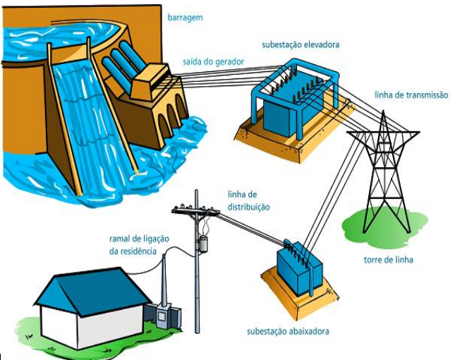

Tipos De Energia Renovável

Energia Solar

Energia Eólica

Cuidar do meio ambiente garante o futuro das próximas gerações, usando energia renovável e reciclando a gente ajuda a natureza
A energia eólica é gerada pela força dos ventos, grandes turbinas chamadas aerogeradores captam o vento e transformam em energia, é uma fonte limpa que não polui e vem sendo usada cada vez mais no Brasil

O papel reciclável deve ser descartado na lixeira azul, inclui jornais, revistas, cadernos e caixas de papelão